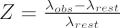

Laboratory experiments here on Earth have determined that each element in the periodic table emits photons only at certain wavelengths (determined by the excitation state of the atoms). These photons are manifest as either emission or absorption lines in the spectrum of an astronomical object, and by measuring the position of these spectral lines, we can determine which elements are present in the object itself or along the line of sight.
However, when astronomers observe spectral lines in extragalactic objects (such as galaxies and quasars), they find that the wavelength of the observed spectral lines differs from the laboratory experiments. In most cases the wavelength of the spectral lines are longer and thus are shifted towards the red end of the spectrum – they are redshifted. There are several explanations for this redshift phenomenon.
Cosmological redshift
The most common reason for this redshift effect is denoted cosmological redshift, and is caused by the expansion of the Universe. For nearby objects, the cosmological redshift, Z is given by:

where λobs is the observed wavelength of the spectral line, and λrest is the rest wavelength of the spectral line. The cosmological redshift of an object provides an estimate of its distance, through Hubble’s law.
Gravitational redshift
Spectral lines can also be redshifted due to the influence of strong gravitational fields – this is not surprisingly known as gravitational redshift. Einstein’s theory of general relativity predicts that the wavelength of electromagnetic radiation will lengthen as it climbs out of a gravitational well. Photons must expend energy to escape, but at the same time must always travel at the speed of light, so this energy must be lost through a change of frequency rather than a change in speed. If the energy of the photon decreases, the frequency also decreases (in other words, the wavelength increases, as wavelength ∝ 1/frequency). A large gravitational redshift is observed when radiation is emitted near or from objects with a strong gravitational field, such as neutron stars and black holes.
Doppler shift
Finally spectral lines can be redshifted due to the motions of the objects they are emitted from – this is known as Doppler shift. If an object is moving away from the observer, the wavelength of the emitted light will be increased, and thus it will appear redshifted. However, if the object is moving towards the observer, the wavelength of the emitted light will be shortened, and the spectral line emission will move towards the blue end of the spectrum – in other words, the light is blueshifted. Doppler shifted emission is commonly seen in galactic objects such as binary star and planetary systems, where astronomical bodies are orbiting one another.
Cosmological redshift is the only type of redshift which gives an indication of the distance to an extragalactic object.